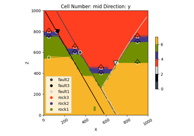

gempy.set_is_fault¶
- gempy.set_is_fault(frame: GeoModel | StructuralFrame, fault_groups: list[str] | list[StructuralGroup], faults_relation_type: FaultsRelationSpecialCase = FaultsRelationSpecialCase.OFFSET_FORMATIONS, change_color: bool = True) StructuralFrame[source]¶
Sets given groups as fault in the structural frame of the GeoModel. It can optionally change the color of these groups.
- Parameters:
frame (Union[GeoModel, StructuralFrame]) – GeoModel or its StructuralFrame to be modified.
fault_groups (Union[list[str], list[StructuralGroup]]) – Groups to be set as faults.
faults_relation_type (FaultsRelationSpecialCase, optional) – Faults relation type to be set. Defaults to FaultsRelationSpecialCase.OFFSET_FORMATIONS.
change_color (bool, optional) – If True, changes the color of the fault groups. Defaults to True.
- Returns:
The updated StructuralFrame object.
- Return type:
Examples using gempy.set_is_fault¶

Video Tutorial “code-along”: Faults
Video Tutorial "code-along": Faults